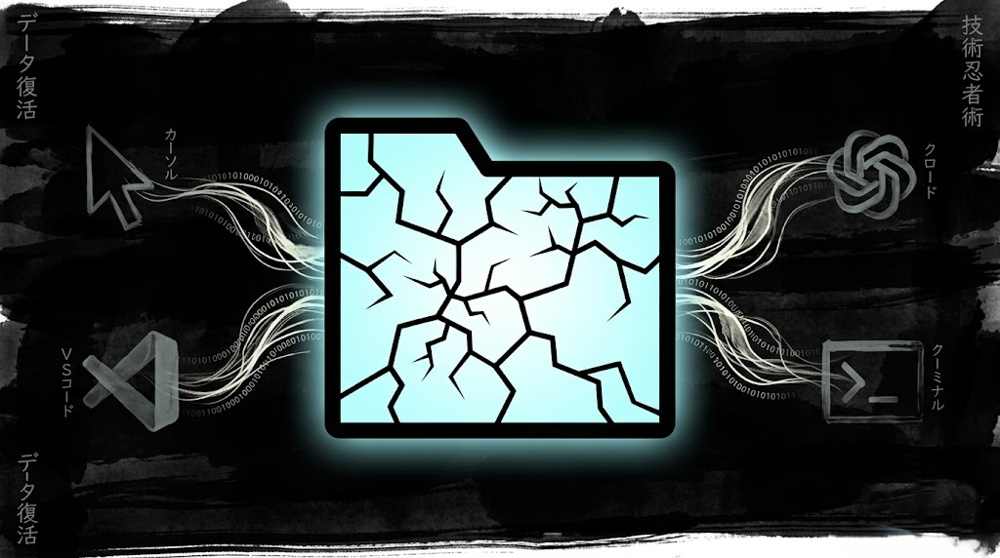
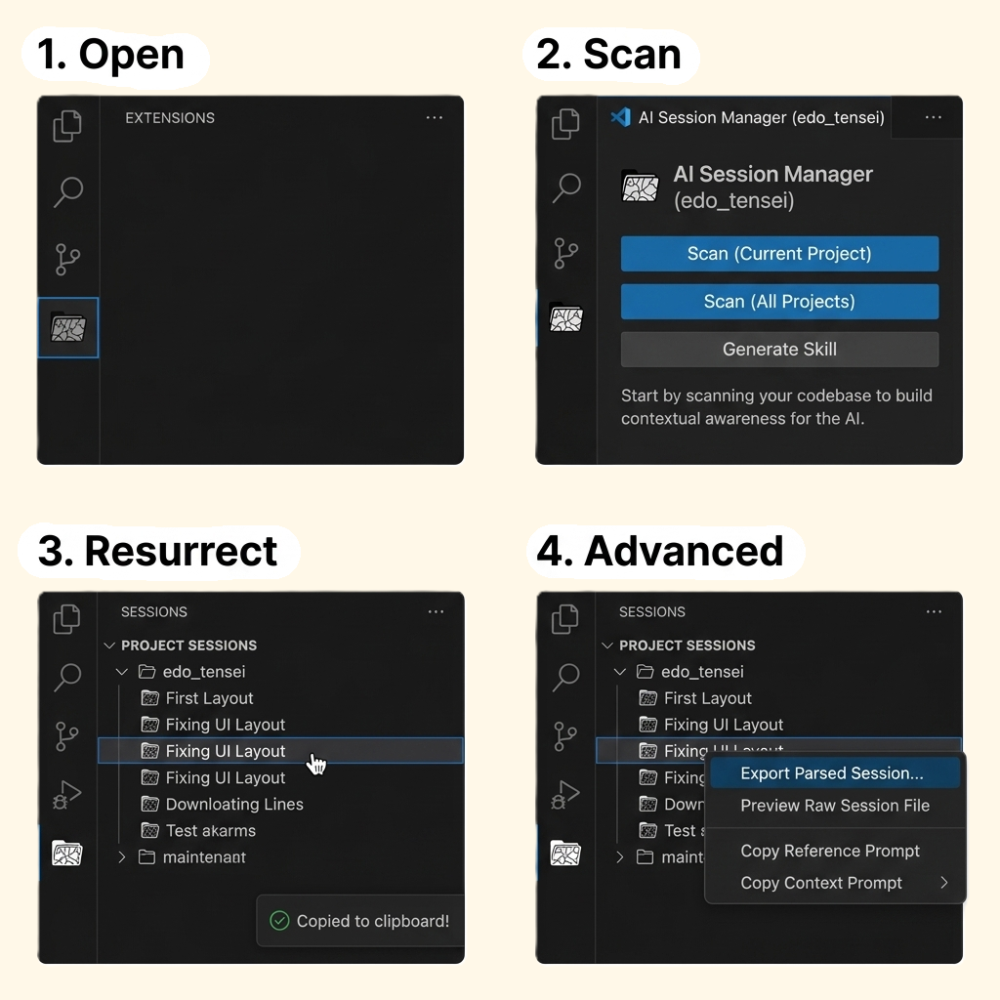
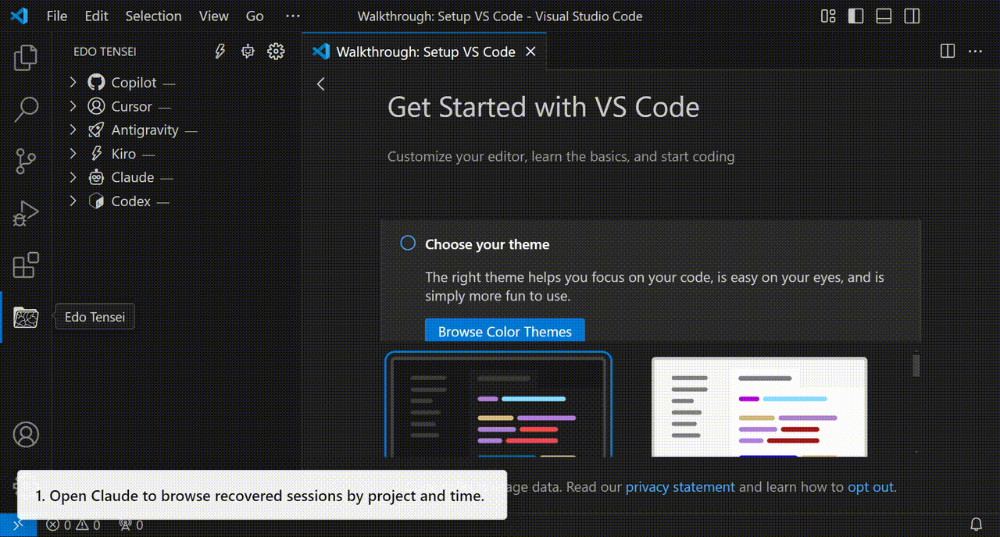

Revive the AI session
that got cut off.
Edo Tensei reads local session histories from Copilot, Cursor, Claude Code, Codex, Kiro, and more, then packages the right context for your next coding agent. View source on GitHub ->

Recover context
in the order you work.
Open Edo Tensei, scan the source IDE, choose the session that matters, then move that handoff into the next agent.

Open, scan, and resurrect a session
Use the Activity Bar panel to scan your local AI sessions. Click the session you want to continue and Edo Tensei copies a ready-to-paste handoff prompt to the clipboard.

Paste into the target agent
The receiving agent gets the source session context without starting from scratch. Use path mode for token efficiency or full-text mode when the new tool cannot read files.

Keep the handoff local and focused
Session discovery happens on your machine. Edo Tensei reads the files your installed IDEs already write and gives you a focused prompt, export, or path reference.
Manual paste is not the only path.
When you configure MCP, compatible agents can discover and read Edo Tensei sessions programmatically. The extension still keeps the local-first boundary: session files stay on your machine.
From interrupted session to usable prompt.
Watch the panel scan local histories, expose available sessions, and copy the handoff prompt that lets the next agent continue the same work.

- 01
Open the Edo Tensei panel in the Activity Bar.
- 02
Expand an IDE to scan local sessions for that source.
- 03
Click any session to copy a handoff prompt.
- 04
Paste it into the next agent and continue the task.
Choose your registry.
Marketplace and Open VSX are treated as equal install paths. For command-line install in VS Code, press Ctrl+P and paste:
VS Code Marketplace
Install from Microsoft Marketplace when you use the standard Visual Studio Code extension gallery.
Open MarketplaceOpen VSX Registry
Install from Open VSX when your editor uses the open extension registry, including VSCodium-style setups.
Open VSXInstall the Edo Tensei agent skill.
Run Edo Tensei: Install Agent Skill and choose Auto Install (Recommended), or use the same canonical Agent Skills CLI command directly.
Connect your agent tools.
After installing the extension, open the VS Code Command Palette and run Edo Tensei: Show MCP Config to generate client-specific MCP JSON.
Works better together.
Edo Tensei revives prior agent context. These companions keep the next task and working files organized.

Quick Prompt
Capture next tasks and reusable snippets while your AI agent is running, without switching windows or losing the next instruction.
Learn about Quick Prompt
VirtualTabs
Group files by task across any directory, so the context you hand to an agent stays curated before the session even starts.
Learn about VirtualTabs